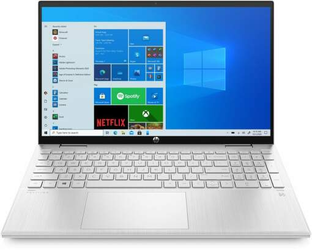
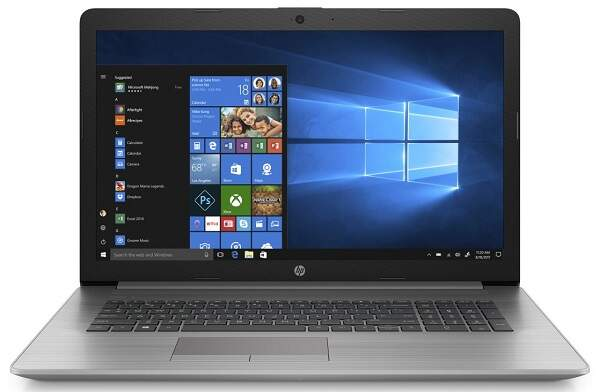
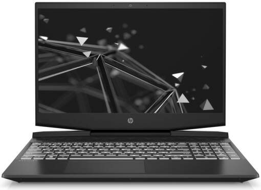

Základný notebook, 4-jadrový procesor Intel Pentium Silver N6000 (1,1GHz, max. 3,3GHz), 8GB operačná pamäť RAM, integrovaná grafická karta Intel UHD Graphics, 15.6" IPS displej s Full HD rozlíšením, 256GB SSD disk, čítačka pamäťových kariet SD, podsvietená klávesnica, HD webkamera, porty HDMI, 2× USB-A, USB-C, Wi-Fi ac, Bluetooth 4.2, Windows 10 Home
Parametre:
Uhlopriečka: 15,6 "
Poskytovaný OS: Windows 10 Home
Operačná pamäť RAM: 8 GB
Kapacita disku: 256 GB
Cena: 519,00 €
HP PROBOOK 430 G7 (9HR42EA)
HP PROBOOK 430 G7
Notebook HP ProBook 430 G7 je určený na pracovné a domáce využitie. Antireflexný displej disponuje rozlíšením Full HD 1920x1080px a IPS panelom. Výkon systému zabezpečuje 2-jadrový procesor Intel Core i3-10110U s frekvenciou 2,1 GHz, DDR4 operačná pamäť RAM a integrovaná grafická karta Intel UHD Graphics 620. Súbory a dáta si uložíte na SSD disku. Notebook má vo svojej výbave HD webkameru, podsvietenú klávesnicu, slot na pamäťové SD karty, porty 2x USB 3.1, USB 3.1-C, HDMI, RJ-45 a kombinovaný audio jack. Bezdrôtové pripojenie zaistí Wi-Fi 802.11ax a Bluetooth 5.0.
Parametre:
Uhlopriečka: 13.3 "
Poskytovaný OS: Windows 10 Pro
Operačná pamäť RAM: 8 GB
Kapacita disku: 256 GB
Cena: 539,00 €
HP PAVILION X360 15-ER0002NC

HP PAVILION
Konvertibilný notebook, 4-jadrový procesor Intel Core i3-1125G4 (2,0GHz, max. 3,7GHz), 16GB operačná pamäť DDR4, integrovaná grafická karta Intel UHD Graphics, 15.6" IPS displej s Full HD rozlíšením a 60Hz obnovovacou frekvenciou, 512GB SSD disk, čítačka pamäťových kariet microSD, podsvietená klávesnica, HD webkamera, porty 1x USB 3.2 Gen 2 typ C (DisplayPort 1.4), 2x USB 3.2 Gen 1, HDMI 2.0, Wi-Fi ax, Bluetooth 5.2, Windows 10 Home
Parametre:
Uhlopriečka: 15,6 "
Poskytovaný OS: Windows 10 Home
Operačná pamäť RAM: 16 GB
Kapacita disku: 512 GB
Cena: 829,00 €
HP 470 G7 (8MH47EA)

HP 470 G7
Notebook HP 470 G7 má plastové šasi v striebornej povrchovej úprave, ktoré ukrýva 4-jadrový procesor Intel Core i7-10510U so základnou frekvenciou 1,8 GHz, samostatnú grafickú kartu AMD Radeon 530 s 2 GB pamäťou. Pre vaše dáta je k dispozícii M.2 SSD disk. Obsah zobrazíte na IPS displeji s Full HD rozlíšením. Notebook je vybavený podsvietenou klávesnicou, čítačkou pamäťových kariet, HD webovou kamerou, rozhraniami 2x USB 3.1, USB 2.0, HDMI, Gigabit LAN, kombinavaným audio portom aj bezdrôtovými pripojeniami Wi-Fi a Bluetooth.
Parametre:
Uhlopriečka: 17.3 "
Poskytovaný OS: Windows 10 Pro
Operačná pamäť RAM: 8 GB
Kapacita disku: 256 GB
Cena: 1 009,00 €
HP PAVILION GAMING 15-DK1009NC (20C62EA)

HP PAVILION GAMING
Herný notebook so 6-jadrovým procesorom Intel Core i7 10750H Comet Lake, základnou frekvenciou 2,6GHz, operačnou pamäťou typu DDR4, pamäťovým slotom 2 SODIMM s možnosťou navýšenia pamäte na 32GB a 256GB pevným diskom. Matný displej sa vyznačuje rozlíšením Full HD, IPS panelom, WLED podsvietením, svietivosťou 250Nits, 144Hz a technológiami UWVA a AntiGlare. O konektivitu sa starajú 3x USB 3.1 Gen 1 a 1x USB-C 3.1 Gen 2 porty. Okrem toho je vybavený rozhraniami HDMI 2.0, RJ-45, 3,5 mm audio vstupom/výstupom a bezdrôtovými technológiami Bluetooth 5.0 a Intel AX201 WiFi 6. Zobrazovaciu jednotku dopĺňa samostatná 6GB grafická karta NVIDIA GeForce RTX Max-Q typu GDDR6.